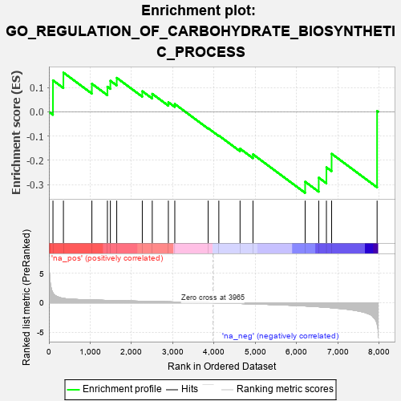
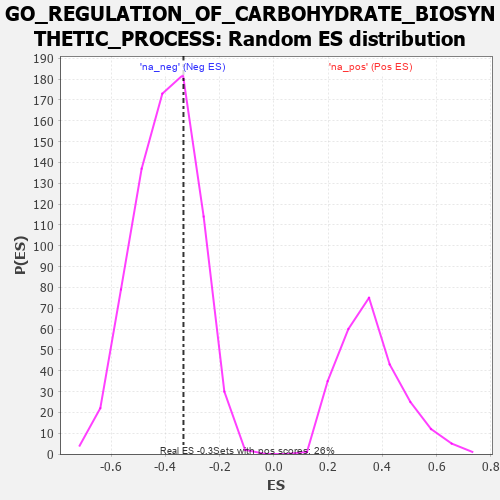

| | | Dataset | 7d |
| Phenotype | NoPhenotypeAvailable |
| Upregulated in class | na_neg |
| GeneSet | GO_REGULATION_OF_CARBOHYDRATE_BIOSYNTHETIC_PROCESS |
| Enrichment Score (ES) | -0.33371267 |
| Normalized Enrichment Score (NES) | -0.836928 |
| Nominal p-value | 0.68640643 |
| FDR q-value | 0.9800291 |
| FWER p-Value | 1.0 |
Table: GSEA Results Summary

Fig 1: Enrichment plot: GO_REGULATION_OF_CARBOHYDRATE_BIOSYNTHETIC_PROCESS
Profile of the Running ES Score & Positions of GeneSet Members on the Rank Ordered List
| PROBE | GENE SYMBOL | GENE_TITLE | RANK IN GENE LIST | RANK METRIC SCORE | RUNNING ES | CORE ENRICHMENT | | 1 | IRS1 | | | 98 | 1.659 | 0.1295 | No |
| 2 | GSK3A | | | 351 | 0.745 | 0.1614 | No |
| 3 | AKT1 | | | 1040 | 0.476 | 0.1156 | No |
| 4 | P2RY1 | | | 1416 | 0.407 | 0.1032 | No |
| 5 | GPT | | | 1488 | 0.392 | 0.1278 | No |
| 6 | DDB1 | | | 1642 | 0.366 | 0.1398 | No |
| 7 | GNMT | | | 2261 | 0.266 | 0.0849 | No |
| 8 | KAT2B | | | 2502 | 0.226 | 0.0740 | No |
| 9 | WDR5 | | | 2892 | 0.168 | 0.0394 | No |
| 10 | MAEA | | | 3048 | 0.143 | 0.0322 | No |
| 11 | DGKQ | | | 3856 | 0.020 | -0.0676 | No |
| 12 | MTOR | | | 4114 | -0.025 | -0.0978 | No |
| 13 | CLK2 | | | 4628 | -0.124 | -0.1517 | No |
| 14 | EP300 | | | 4941 | -0.186 | -0.1750 | No |
| 15 | INSR | | | 6204 | -0.538 | -0.2877 | Yes |
| 16 | DYRK2 | | | 6533 | -0.677 | -0.2710 | Yes |
| 17 | GSK3B | | | 6719 | -0.768 | -0.2286 | Yes |
| 18 | PTH1R | | | 6845 | -0.839 | -0.1726 | Yes |
| 19 | PASK | | | 7946 | -3.674 | 0.0031 | Yes |
Table: GSEA details [plain text format]

Fig 2: GO_REGULATION_OF_CARBOHYDRATE_BIOSYNTHETIC_PROCESS: Random ES distribution
Gene set null distribution of ES for GO_REGULATION_OF_CARBOHYDRATE_BIOSYNTHETIC_PROCESS